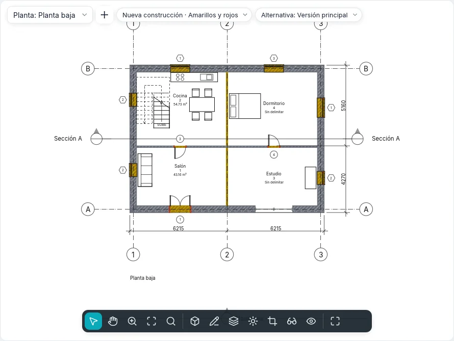

Fases y demoliciones
Una reforma se dibuja en fases: el estado actual, la nueva construcción y, si hace falta, las fases intermedias. Cada elemento del modelo se crea en una fase y puede demolerse en una fase posterior; cada vista muestra el modelo tal como es en su fase, con un filtro de fases que decide cómo se ven los elementos nuevos, existentes, demolidos y temporales. Un solo modelo da así la planta del estado actual, la de demoliciones, la de proyecto y el plano comparativo en amarillos y rojos.
Los estados de la fase
La fase de la vista y las dos fases de un elemento dan su estado en esa vista:
| Estado | El elemento… |
|---|---|
| Nuevo | se crea en la fase de la vista |
| Existente | se crea en una fase anterior y no se demuele hasta la fase de la vista |
| Demolido | se crea en una fase anterior y se demuele en la fase de la vista |
| Temporal | se crea y se demuele en la fase de la vista |
Un elemento creado después de la fase de la vista, o demolido antes, no está en esa vista.
Las fases del proyecto
Proyecto ▸ Fases ▸ Fases (estilo BIMopen: Proyecto ▸ Fases…) abre el cuadro de diálogo Fases, con tres pestañas. Un proyecto nuevo tiene Estado actual y Nueva construcción.
En la pestaña Fases del proyecto cada fase es una fila numerada, del pasado (arriba) al futuro (abajo), con Nombre y Descripción. Un clic en el número selecciona la fila.
- Insertar antes e Insertar después añaden una fase junto a la seleccionada, nombrada en secuencia (Fase 1, Fase 2…). Las fases no se reordenan: insértalas en el lugar correcto.
- Combinar con ▸ Anterior o Siguiente quita la fase seleccionada: los elementos, las vistas, las tablas de planificación y las habitaciones que la usaban pasan a la fase con la que se combina.
Los nombres no pueden estar vacíos ni repetirse. Aceptar aplica las tres pestañas juntas, en un solo paso que Deshacer (Ctrl+Z) revierte; Cancelar del cuadro de diálogo no cambia nada. El interruptor Vista preliminar en la cabecera muestra la vista activa con los cambios aún no confirmados, con el filtro elegido bajo la vista preliminar.
Los filtros de fases
En la pestaña Filtros de fases cada filtro indica, para cada estado (Nuevo, Existente, Demolido, Temporal), si los elementos se dibujan Por categoría (como dicen los estilos y las modificaciones de la vista), Modificado (con las modificaciones gráficas del estado) o No mostrar (no se dibujan ni se seleccionan).
| Filtro predefinido | Nuevo | Existente | Demolido | Temporal |
|---|---|---|---|---|
| Mostrar todo | Por categoría | Modificado | Modificado | Modificado |
| Mostrar demolido + nuevo | Por categoría | No mostrar | Modificado | Modificado |
| Mostrar nuevo | Por categoría | No mostrar | No mostrar | No mostrar |
| Mostrar anterior + demolido | No mostrar | Por categoría | Modificado | No mostrar |
| Mostrar anterior + nuevo | Por categoría | Por categoría | No mostrar | No mostrar |
| Mostrar fase anterior | No mostrar | Modificado | Modificado | No mostrar |
| Amarillos y rojos | Modificado | Modificado | Modificado | No mostrar |
Nuevo añade un filtro (todo por categoría), Eliminar lo quita: si una vista lo usa, el cuadro de diálogo lo pregunta antes, y esas vistas pasan a Ninguno. En la primera fase Mostrar fase anterior no muestra nada. Para verlo todo sin modificaciones se elige Ninguno como filtro de la vista.
Las modificaciones gráficas
La pestaña Modificaciones gráficas tiene una fila por estado: Líneas de proyección y Líneas de corte (grosor, color, patrón de línea), Patrones de superficie y Patrones de corte (visible, patrón, color; Borrar modificaciones vuelve a los de la categoría), Medio tono (líneas, patrones y rellenos atenuados hacia el fondo, pero no los colores de los materiales de las vistas sombreadas) y Material (su color sombreado y su aspecto en las vistas sombreadas y realistas).
Se aplican donde un filtro dice Modificado. Los filtros de la vista y los gráficos por elemento prevalecen sobre ellas. Las predeterminadas siguen el uso italiano: existente gris, demolido amarillo discontinuo, nuevo rojo, temporal punteado en medio tono.
La fase de las vistas
Las plantas, las plantas de falsos techos, las secciones, los alzados, las vistas 3D, las plantas de áreas y las tablas de planificación tienen en el grupo Fases de sus propiedades Filtro de fases y Fase. Una vista nueva toma la última fase y Mostrar todo; Duplicar vista mantiene la fase y el filtro, y luego cada uno se cambia: la misma planta en dos momentos. Una plantilla de vista puede fijar el filtro (Filtro de fases entre las propiedades incluidas), nunca la fase.
En el estilo BIMopen la etiqueta Fase · Filtro en la parte superior de la vista abre un menú que cambia una u otro.
Las fases de los elementos
Cada elemento del modelo (muros, puertas, ventanas, componentes, suelos, cubiertas, falsos techos, columnas, escaleras, barandillas, rampas, muros cortina) tiene en el grupo Fases de sus propiedades:
- Fase de creación: la de la vista en la que se creó (o se pegó) el elemento;
- Fase de derribo: Ninguna, o la fase en la que se demuele; solo se ofrecen la fase de creación y las posteriores, y Ninguna anula la demolición.
Las anotaciones, las cotas, los textos y los elementos de detalle no tienen fases: pertenecen a su vista. Los submuros de un muro apilado y las piezas de un muro curvo siguen al muro entero. Los proyectos anteriores, con las dos fases fijas de los muros, se abren con las fases del mismo nombre.
Demoler
Modificar ▸ Formas ▸ Demoler (estilo BIMopen: Modificar ▸ Demoler) funciona en plantas, secciones, alzados y vistas 3D. Junto al cursor aparece el martillo y se resalta lo que se puede demoler en la fase de la vista. Un clic demuele el elemento en esa fase, en todas las vistas de la misma fase:
- un muro demolido se lleva consigo sus puertas y ventanas;
- un elemento creado en la misma fase pasa a ser temporal;
- si el filtro de la vista no muestra los demolidos, el elemento desaparece enseguida.
Con elementos ya seleccionados, Demoler los demuele todos enseguida y luego espera más clics. Esc o Modificar cierran la herramienta; cada clic es un paso de deshacer.

Los rellenos
Donde una puerta o una ventana se demuele y su muro se queda, el hueco se rellena desde la fase de la demolición en adelante, con las capas del muro: se ve en planta, en sección, en alzado y en 3D. Donde una abertura se hace en una fase posterior a la del muro, en las fases anteriores el muro está entero.
Un relleno se selecciona con un clic, por ejemplo en una sección con Mostrar anterior + nuevo: su Tipo se cambia por otro tipo de muro básico, para dibujar un cerramiento distinto; el relleno de las fases anteriores a la abertura tiene siempre la estructura del muro. Los rellenos no se mueven, no se giran, no se reflejan, no se copian ni se pegan: siguen a sus aberturas.
Habitaciones y tablas por fase
Una habitación pertenece a la fase de la vista en la que se coloca (su Fase es de solo lectura): una planta muestra, etiqueta y selecciona solo las habitaciones de su fase, y el mismo número puede existir en fases distintas. Una habitación se delimita con los elementos que existen al final de su fase: demoler un tabique cambia las habitaciones de esa fase y de las posteriores, no las del estado actual. Copiar al portapapeles una habitación desde una vista y Pegar en la vista activa en una vista de otra fase: la habitación pasa a esa fase con las mismas propiedades.
Una tabla de planificación tiene Fase y Filtro de fases como las vistas (en Nueva tabla de planificación la fase propuesta es la última): las filas son los elementos tal como son en esa fase, los que el filtro muestra. Mostrar anterior + demolido lista las puertas que hay que quitar, Mostrar nuevo las que hay que comprar. Los campos Fase de creación y Fase de derribo se muestran, se ordenan, se filtran y se modifican desde la celda.
Los filtros de vista tienen reglas sobre Fase de creación y Fase de derribo: igual o distinta, y menor que / mayor que para antes o después en el orden de las fases.
Leyendas de fase
Un componente de leyenda tiene la propiedad Estado de la fase: con Existente, Demolido, Nuevo o Temporal la muestra se dibuja con las modificaciones de ese estado, junto a su texto.
Intercambio
- IFC: con un proyecto con fases, Exportar ▸ IFC pide la Fase que se exporta (se propone la última). Se escriben los elementos que existen en esa fase, cada uno con su estado (Status: NEW, EXISTING, DEMOLISH, TEMPORARY) en el conjunto de propiedades común de su clase y sus dos fases por nombre. Al abrir un archivo IFC, los objetos con este estado toman las fases correspondientes del proyecto.
- DWG y DXF: en Exportar formatos CAD la opción Estado de la fase en el nombre de la capa añade a la capa de la categoría el sufijo del estado (-EXST, -DEMO, -NEWW, -TEMP): un muro demolido va a A-WALL-DEMO.
La correspondencia de las fases de los modelos vinculados llegará con los modelos vinculados.